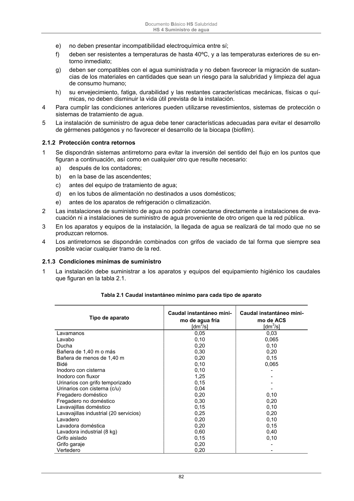
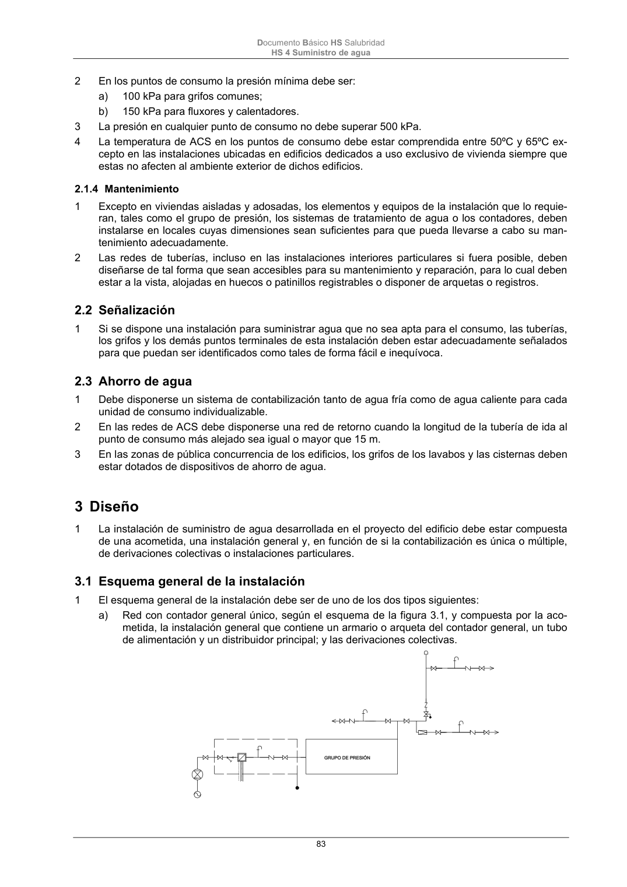

DB-HS Salubridad · edición 2022-06-14 · capa oficial
Documento DB-HS-oficial · SHA-256 del PDF 68df3caacc95f71aee2ec1ba7b2c65ae66155c21e3a8785521b8fdd4fd640d3b
Copia fiel del PDF fuente · Fuente oficial
Ficha de la disposición en la fuente oficial
Formatos: JSON del segmento · Markdown
2.1.3 Condiciones mínimas de suministro 1 La instalación debe suministrar a los aparatos y equipos del equipamiento higiénico los caudales que figuran en la tabla 2.1. Tabla 2.1 Caudal instantáneo mínimo para cada tipo de aparato Tipo de aparato Caudal instantáneo míni- mo de agua fría Caudal instantáneo míni- mo de ACS [dm3/s] [dm3/s] Lavamanos 0,05 0,03 Lavabo 0,10 0,065 Ducha 0,20 0,10 Bañera de 1,40 m o más 0,30 0,20 Bañera de menos de 1,40 m 0,20 0,15 Bidé 0,10 0,065 Inodoro con cisterna 0,10 - Inodoro con fluxor 1,25 - Urinarios con grifo temporizado 0,15 - Urinarios con cisterna (c/u) 0,04 - Fregadero doméstico 0,20 0,10 Fregadero no doméstico 0,30 0,20 Lavavajillas doméstico 0,15 0,10 Lavavajillas industrial (20 servicios) 0,25 0,20 Lavadero 0,20 0,10 Lavadora doméstica 0,20 0,15 Lavadora industrial (8 kg) 0,60 0,40 Grifo aislado 0,15 0,10 Grifo garaje 0,20 - Vertedero 0,20 - Documento Básico HS Salubridad HS 4 Suministro de agua 83 2 En los puntos de consumo la presión mínima debe ser: a) 100 kPa para grifos comunes; b) 150 kPa para fluxores y calentadores. 3 La presión en cualquier punto de consumo no debe superar 500 kPa. 4 La temperatura de ACS en los puntos de consumo debe estar comprendida entre 50ºC y 65ºC ex- cepto en las instalaciones ubicadas en edificios dedicados a uso exclusivo de vivienda siempre que estas no afecten al ambiente exterior de dichos edificios.

